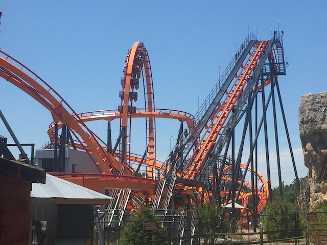
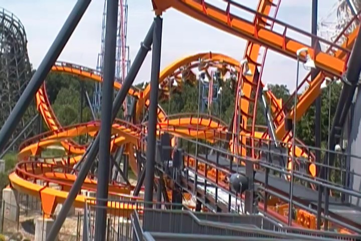
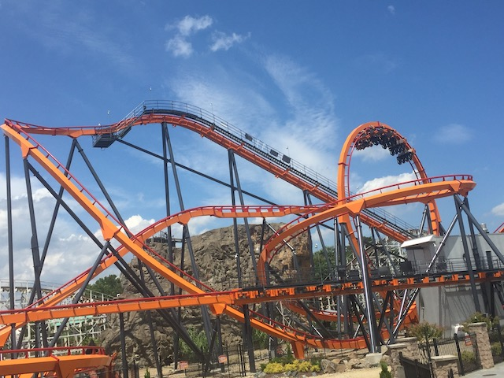
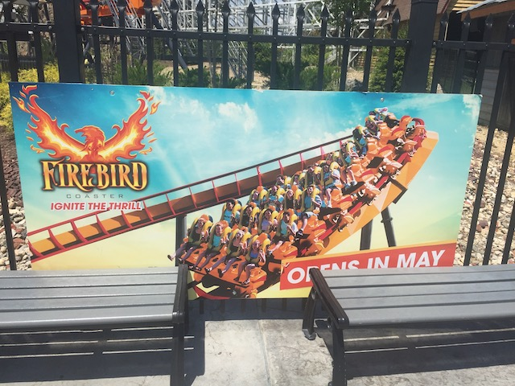

| |
Firebird Review

We're here at Six Flags America where we're checking out Firebird. Now this ride has a VERY interesting history. It opened up at Six Flags Great America as Iron Wolf. Now this ride is historic as....this was the first coaster ever built by B&M. Now regardless of what your thoughts on Iron Wolf were, this coaster sparked a great coaster company that made several different great rides. However, in 2012, Six Flags Great America decided that they didn't want it anymore. So they shipped it off to Six Flags America as Apocalypse. Then this year, the park decided to hop on the trend of turning old stand up coasters into floorless coasters. And so they decided to turn Apocalypse into Firebird. And....it's just a standard floorless coaster now. So....let's hop in the trains, pull down the restraints, the floor drops away, and off we go! Around the turn we go and into the lifthill we climb. While it's not a very high climb, you still get a good view of....the views at Six Flags America suck. Then we reach the top. We dip down the pre drop, and get yanked around the frst drop. We gain a good amount of speed for this drop. But before anything else can be said, we fly into a vertical loop. One moment, we're head over heels, the next thing, you know, you're back on the ground right side up. So far, so good. Next, we rise into a sort of overbanked turn. After that banked, we immetietly bank to the oppisite direction and twist down another fairly decent sized drop. I know back when this ride was Iron Wolf, this ride was ROUGH!!! But at the same time, it had this weird sort of hypnotic rhythm to it that still made it really fun. The good news is that as Firebird, all that roughness is gone. It is perfectly smooth now. Which for some people, makes it automatically better as I know many enthusiasts LOATHED Iron Wolf. However, that hypnotic rhythm just isn't there on Firebird. Sure, it does have a little more whip here. There's certainly more whip on Firebird than there is on Patriot. But....that weird sort of charm just isn't there. Anyways, we then start to head into a big upward swooping helix. We rise up high, eventually, we're just turning. After threading the verical loop we were just in, we then head into some straight track. We then dip down a drop. During this drop, we get a nice small pop of ejector air. We begin to turn to the right, but suddenly, we are thrown into a corkscrew to the left. Fun, but it was better on a stand up coaster. You then head into a big turnaround turn before dipping down. You then go through some twisty track before going through a big swooping turn. We then switch directions and go through another big turn and a big hill with it as well. You then rise up and get some more airtime. You then turn and head through some straight track until you hit the brake run. Now Firebird is still a very fun coaster that I enjoyed riding. However, the weird rhythm it had as Iron Wolf is something that I strangely miss. Now I know most of you will strongly disagree with me, saying that it's just much better now simply because it's smoother. And I can't blame them for that. Cause...it's unquestionably true. However, I really did Iron Wolf. And....I really dislike the whole trend of turning old stand up coasters into floorless coasters. Please stop. Ugh. Well, as long as you don't touch Riddlers Revenge or Georgia Scorcher, I'll be fine.
7/10
Location: Six Flags America
Opened as Iron Wolf at Six Flags Great America in 1990
Relocated to Six Flags America as Apocalypse in 2012
Firebird became a floorless coaster in 2019
Built by: B&M
Last Ridden: July 22, 2019
Firebird Photos





Iron Wolf Photos


Home
|